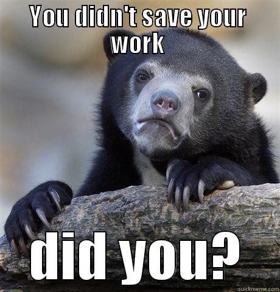

About 792,000,000 results (0.79 seconds)
Search Results
Web results
Farmer's Advocate and Home Journal

https://books.google.com › books1913 - Agriculture
Every minute the Galloway,
is working it is making a tremendous dividend on ...
keeping it right at home,
that you will call it the best investment you ever made in ...
Any time I can do anything for my friend Galloway,
I will only be too pleased to do so. ...
Van Also Ont.:
“The engine ught of you is giving the best of service.
saved ...
People also ask
What is the 50 20 30 budget rule?
How can I save $1000 fast?
What is the 30 day rule?
How can I save 100k in 3 years?
The Pottery & Glass Salesman
https://books.google.com › books
Electric Portable,
Wood Base—Cloisonné Effect, Parchment ...
"I'll tell you the way I am going to work it,"
the would-be retailer explained enthusiastically. ...
If I can save ten or fifteen dollars this week
by not drawing a salary,
it will go back ...
Fix your salary.
l)on't set it too high,
for you have no right to place a fictitious value on ...
Visions of Chains: An Awakening Novel
- Google Books Result https://books.google.com › books
Regan Hastings - 2012 - Fiction
Taking a step away from him,she slipped out of her jacket and tossed it onto ...
She had never been a particularly sexual person. ...
If she had any sense at all, she would have been terrified. ...
and knew that whatever he wanted to do to her,
with her, she wanted it, too. ...